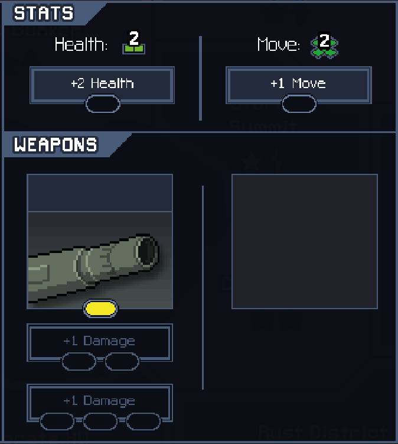
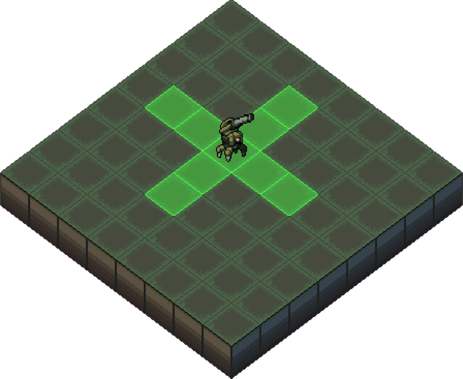
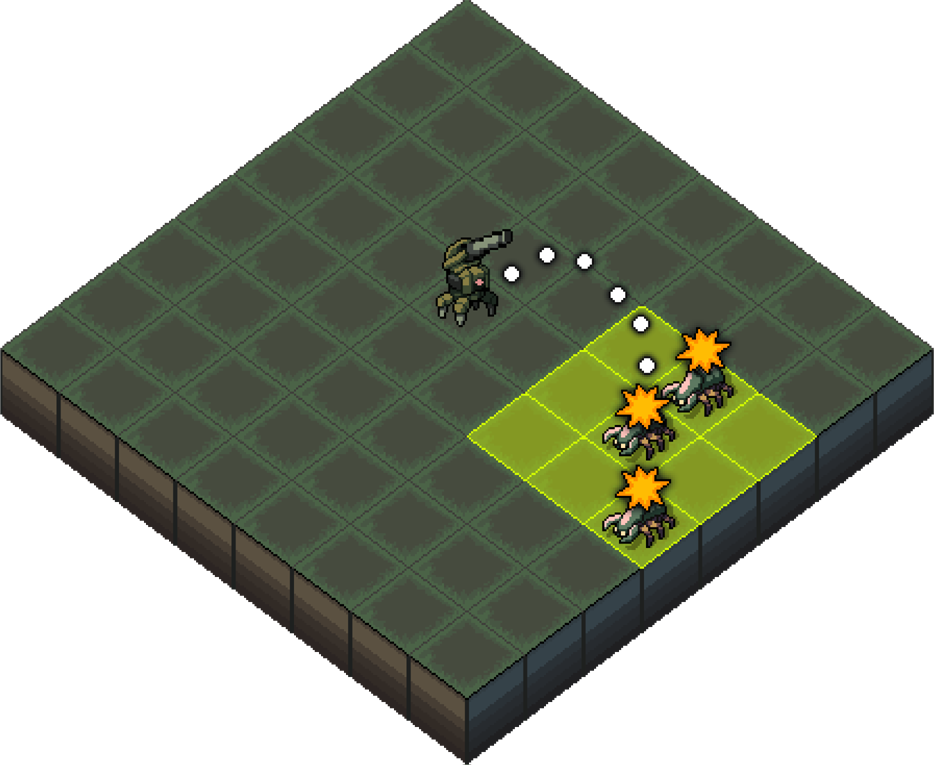
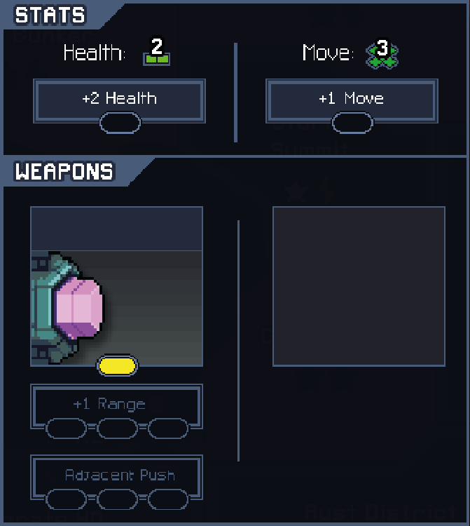
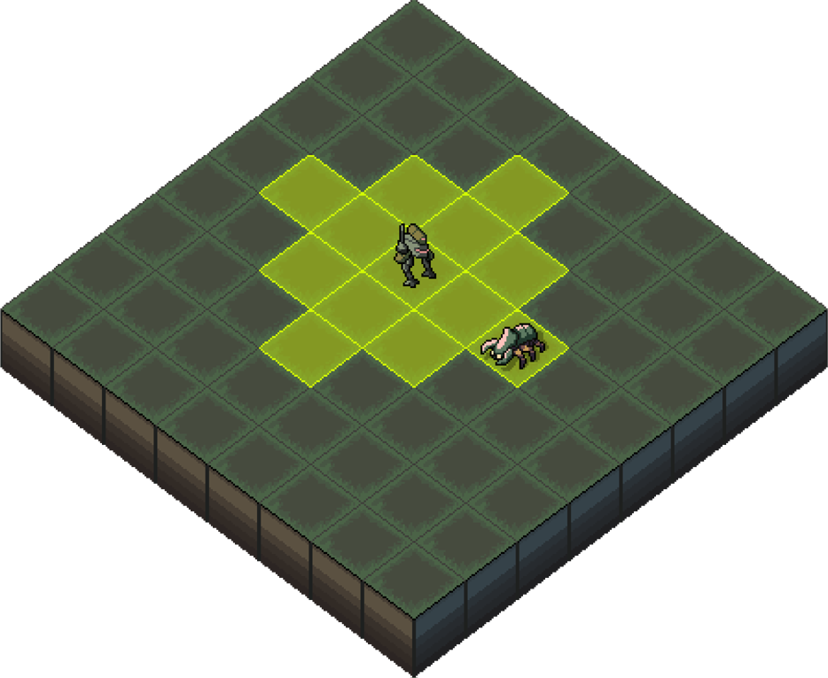
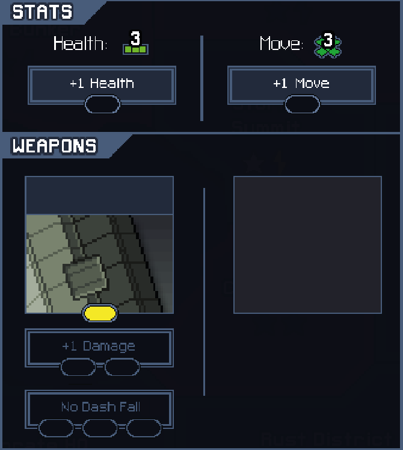
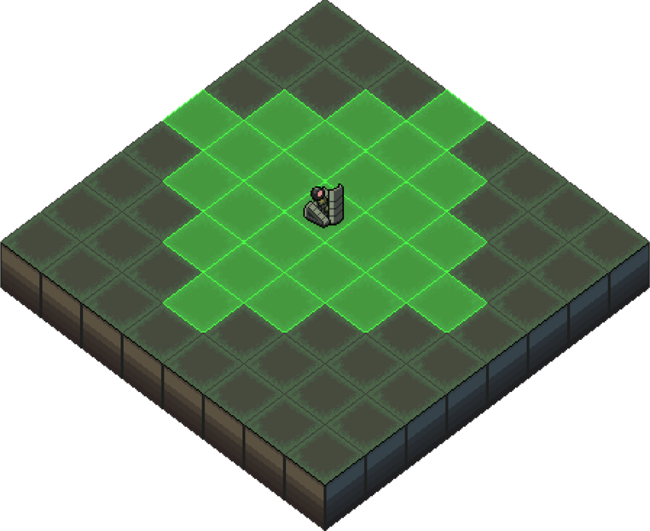

Escouade d'Into the Breach : Donnern
Catégorie : Game Design
Into the Breach : Qu'est-ce que c'est ?
Into the Breach est un jeu de stratégie au tour par tour créé par le studio Subset Games dans lequel on contrôle une escouade composée de 3 unités face à des hordes de monstres.L'objectif du joueur est de tirer parti des capacités spécifiques de ses unités pour éliminer dans chaque niveau des vagues de monstres pendant un nombre de tours limité. Cela doit se faire tout en évitant que les constructions environnantes ne soient trop endommagées par les attaques ennemies.
Mod : Escouade Donnern
L'escouade Donnern est un concept d'escouade de 3 unités conçue pour pouvoir être potentiellement intégrée au jeu Into the Breach, produite au sein d'un groupe de 4.Le concept de l'escouade est qu'elle tourne autour d'une unité extrêmement puissante mais difficile à maîtriser, accompagnée de deux autres unités dont la principale utilité est de faciliter la tâche de la première.
Vulcan Raven Mech :
Mobilité :
Portée d'attaque :
En lien avec ce qui a été dit plus haut, la principale qualité du Vulcan Raven Mech est sa force : en plus d'avoir une grande portée d'attaque, il inflige 3 de dégâts par attaque et recule automatiquement d'une case en conséquence.L'intérêt est que cela oblige le joueur à porter une grande attention à son positionnement pour éviter de blesser ses unités ou constructions alliées, ainsi que lui-même.
Kleiner Stolz Mech :
Mobilité :
Portée d'attaque :
La particularité de cette unité-là est que son attaque n'inflige pas de dégâts : à la place, elle échange la place du Kleiner Stolz Mech avec celle de l'ennemi. Combinée à son aire de déplacement, cela lui permet de déplacer un ennemi se situant presque n'importe où dans le niveau sur une case plus favorable aux portées du Vulcan Raven Mech. Et se faisant, il peut par la même occasion s'éloigner de la portée d'attaque de son allié pour minimiser les dégâts sur lui-même.
L'une de ses upgrades possibles "Adjacent Push" lui permet de repousser d'1 case toutes les unités se trouvant autour de sa case d'arrivée, après utilisation de son attaque, augmentant ainsi les possibilités vis-à-vis du repositionnement des ennemis.
Junger Mech :
Mobilité :
Portée d'attaque :
En ligne droite uniquement, dans l'une des 4 directions autour de lui.
Enfin, le Junger Mech est une unité typée "Tank", c'est-à-dire qu'elle possède plus de santé que les autres pour contrebalancer le fait qu'elle soit obligée d'attaquer en chargeant en ligne droite, ce qui peut être dangereux.En effet, celui-ci ne peut pas arrêter son attaque manuellement : Il doit d'abord atteindre un ennemi ou un autre obstacle lors de celle-ci pour stopper son mouvement.
Mais le cas le plus risqué est celui où il foncerait vers un trou, ce qui le tuerait instantanément. C'est pour cela qu'il peut obtenir une upgrade "No Dash Fall" qui lui permet d'automatiquement arrêter son déplacement lorsqu'il arrive face à un trou en attaquant.
Pour finir, entrer en contact avec une unité via une attaque inflige 1 de dégât, et fait reculer le Junger Mech d'1 case. L'une de ses capacités passives lui permet d'ailleurs d'obtenir un bouclier par la même occasion, protégeant des dégâts de la prochaine attaque reçue et de certains statuts négatifs.
L'équipe de l'escouade Donnern :
- - Scotty CHOUAN
- - Bekir KILINC
- - Jean DESBEAUX
- - Arnaud GUEGHEROUNI